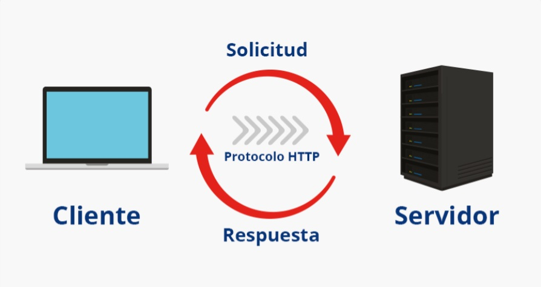

Metodos GET y POST
Son métodos de envío de la información de los formularios válidos y ampliamente utilizados. Cada método tiene sus ventajas y sus inconvenientes y no se puede decir que uno sea mejor que otro. Elegir entre un método y otro depende de la aplicación concreta que se esté desarrollando y es algo que dentro de las empresas de desarrollos web suelen decidir los encargados del diseño de las aplicaciones. A nosotros en este curso básico simplemente nos interesa conocer la existencia de ambos métodos y sus características.
Tabla de ejemplo
| Método | Descripción | Cuándo se usa |
|---|---|---|
| GET | Lleva los datos de forma "visible" al cliente (navegador web). El medio de envío es la URL. Los datos los puede ver cualquiera. | Cada vez que se accede a un sitio web, se realiza un método GET. Este recupera datos del servidor. |
| POST | Consiste en datos "ocultos" enviados por un formulario cuyo método de envío es post. Es adecuado para formularios porque los datos no son visibles. | Se utiliza para enviar una entidad al recurso especificado. Por ejemplo, cuando se envía un formulario se suele utilizar el método POST. |